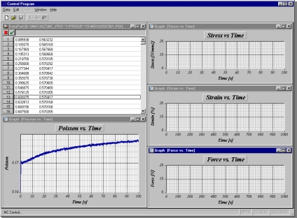

Raèunalniški programi - Nadzor naprav
Raèunalniški program nadzor naprave za enoosni natezni preizkus
| NAROÈNIK: | Center za eksperimentalno mehaniko (CEM) - magisterij | |
| OPIS: | Program je namenjen regulaciji in nadzoru naprave za enoosni natezni preizkus. Omogoèa krmiljenje servomotorja preko RS-232 komunikacije, krmiljenje cirkulatorja in zajem podatkov o temperaturi, ki jih dobi iz cirkulatorja preko RS-232 komunikacije, ter krmiljenje razliènih tipov HP-IB instrumentov s soèasnim zajemom podatkov iz instrumentov, kar poteka preko HP-IB komunikacijskega vmesnika. Program omogoèa linearni in logaritmièni zajem podatkov med meritvijo. Podatke preraèuna v natezni modul relaksacije in Poissonovo število in jih shrani v izbrano datoteko. Izmerjene podatke lahko med meritvijo, kakor tudi po njej izrišemo v obliki diagrama. Program omogoèa pregled, korekcijo in izris podatkovnih ter korekcijo tekstovnih datotek, kakor tudi zajem bitne slike. | |
| PROG. DATOTEKA: | Mc.exe | |
| STROJNA OPREMA: | Cirkulator
HAAKE F6-C40U nidrive UNI 1405, Servomotor 95DSD300H, Resolver UD 53, modul UD 70 Data Acquisition HP 3852 Komunikacijski vmesnik HP82335 HP-IB PC Pentium II raèunalnik |
|
| PROGRAMSKI MODULI: | Grafika, zvok, komunikacija s servomotorjem, komunikacija s cirkulatorjem, HP-IB komunikacija, obdelava podatkovnih in tekstovnih datotek, zajem bitne slike, izvajanje meritev | |
| PROGRAMSKI JEZIK: | Software Development Kit (SDK – Visual Studio) | |
| OPERACIJSKI SISTEM: | Windows 3.x, 95/98/NT | |
| LETO IZDELAVE: | 1997-2000 | |
 |